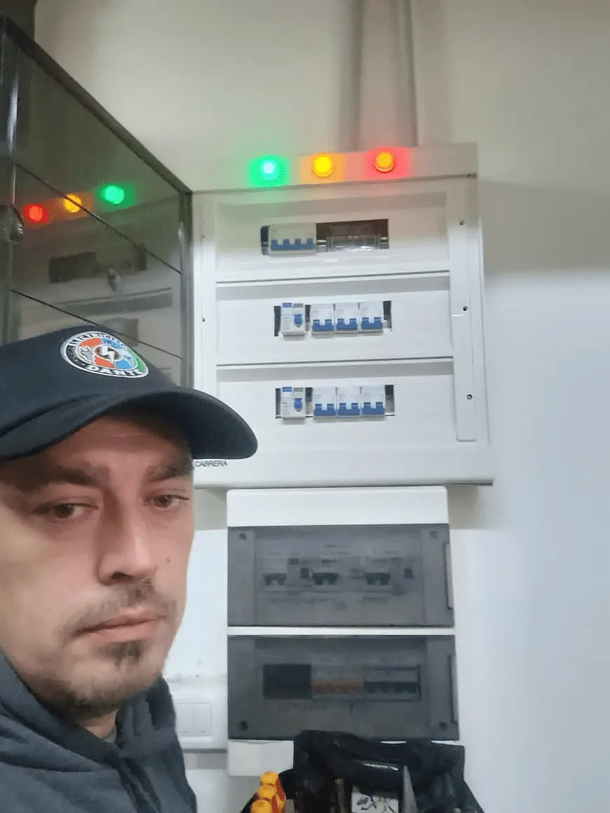
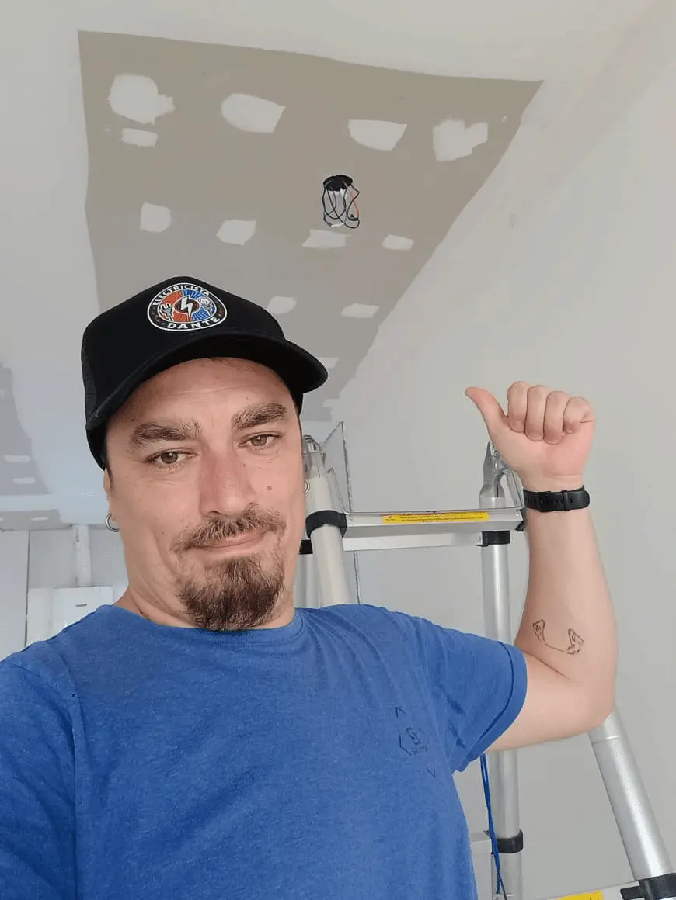
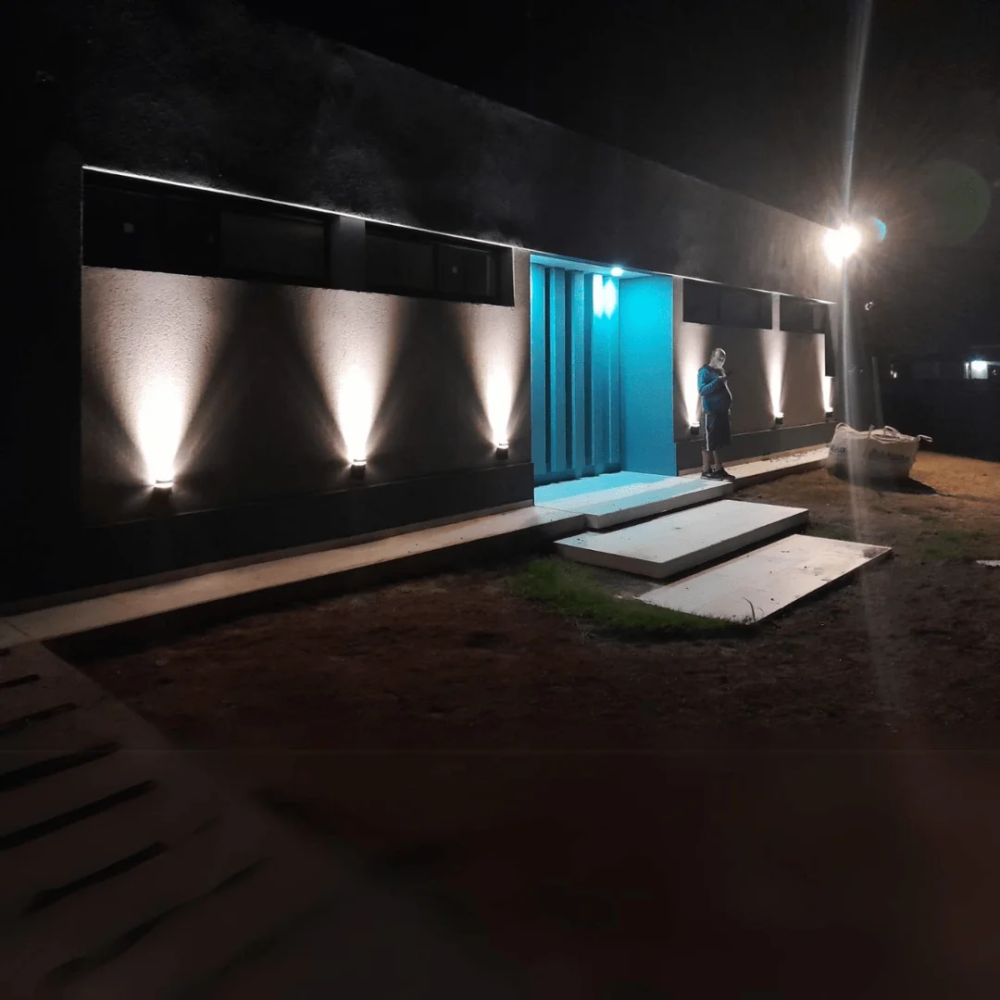

Instalaciones y tableros
Instalaciones eléctricas, armado y renovación de tableros, recambio de protecciones y cableado.
ConsultarQuilmes · Buenos Aires
Instalaciones, reparaciones y proyectos eléctricos para hogares, comercios e industrias. Hablá directamente con Dante y contale qué necesitás.
Desde 2003, experiencia en trabajos eléctricos.

02 / Qué hacemos
Desde una reparación puntual hasta el armado de una instalación: contanos el trabajo y vemos cómo seguir.
Instalaciones eléctricas, armado y renovación de tableros, recambio de protecciones y cableado.
ConsultarRevisión de cortocircuitos, caídas de luz, circuitos y otras fallas de la instalación.
ConsultarInstalación y revisión de puesta a tierra como parte de un sistema eléctrico seguro.
ConsultarColocación de luminarias, ventiladores y otros artefactos eléctricos.
ConsultarCanalizaciones y bandejas para organizar y proteger tendidos eléctricos.
ConsultarPlanificación eléctrica y documentación para obras, comercios e industrias.
Consultar03 / Experiencia
Desde 2003
Electricidad para hogares, comercios e industrias en Quilmes y alrededores.
04 / En imágenes
Una selección de trabajos y espacios eléctricos compartidos por Electricista Sur.





Imágenes de trabajos compartidas por Electricista Sur.
05 / Lo cuentan ellos
Opiniones publicadas en la página de Electricista Sur.
“Puntualidad, compromiso y responsabilidad. Me solucionó un problema en la fábrica y en mi casa. Había llamado a dos electricistas más y ninguno pudo encontrar la fuga. Hizo la instalación completa y cambio de cables en la fábrica.”
“Llamé a Dante con una urgencia debido a un cortocircuito en mi casa que me dejó sin luz. Respondió rápido, llegó a tiempo y fue muy profesional. Localizó la causa y lo resolvió de forma impecable.”
“Excelente profesional, sabe mucho, resolvió mi problema un domingo y en poco tiempo. Me explicó todo el procedimiento que estaba realizando y utilizó material de alta calidad para la reparación.”
06 / Cerca tuyo
Electricista Sur trabaja desde Quilmes, Buenos Aires. Consultá por tu trabajo y contale a Dante dónde necesitás el servicio.
Consultar mi zona07 / Antes de escribir
Si tu consulta es distinta, podés escribirle directamente a Dante.
Instalaciones y tableros, puesta a tierra, reparación de fallas, luminarias, canalizados, cableado y proyectos eléctricos.
Sí. La información publicada por Electricista Sur incluye trabajos para hogares, comercios e industrias.
Escribile a Dante por WhatsApp y describí brevemente el trabajo. No hace falta completar un formulario.
Electricista Sur está en Quilmes, Buenos Aires. Consultá por WhatsApp si tu zona está dentro del área de trabajo.
08 / El próximo paso
Una consulta directa con Dante para conversar sobre tu trabajo eléctrico.
Abrir WhatsApp O llamá al 11 5043-2855